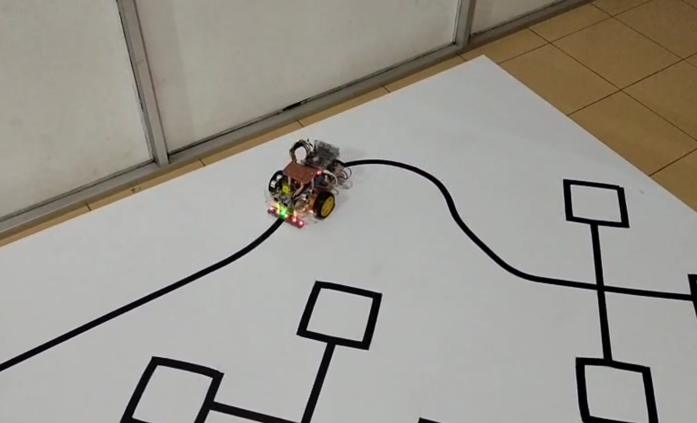
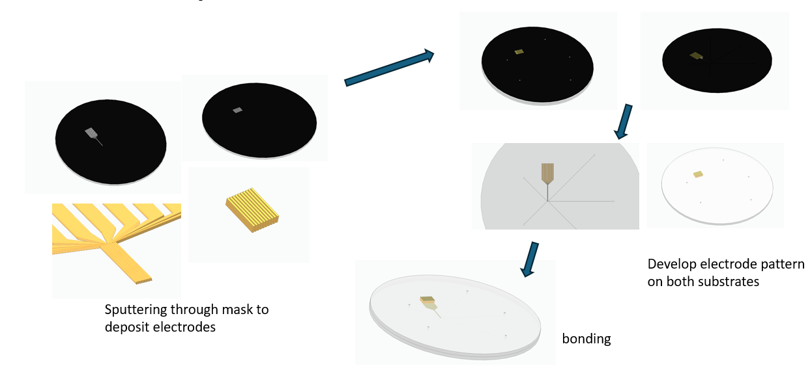
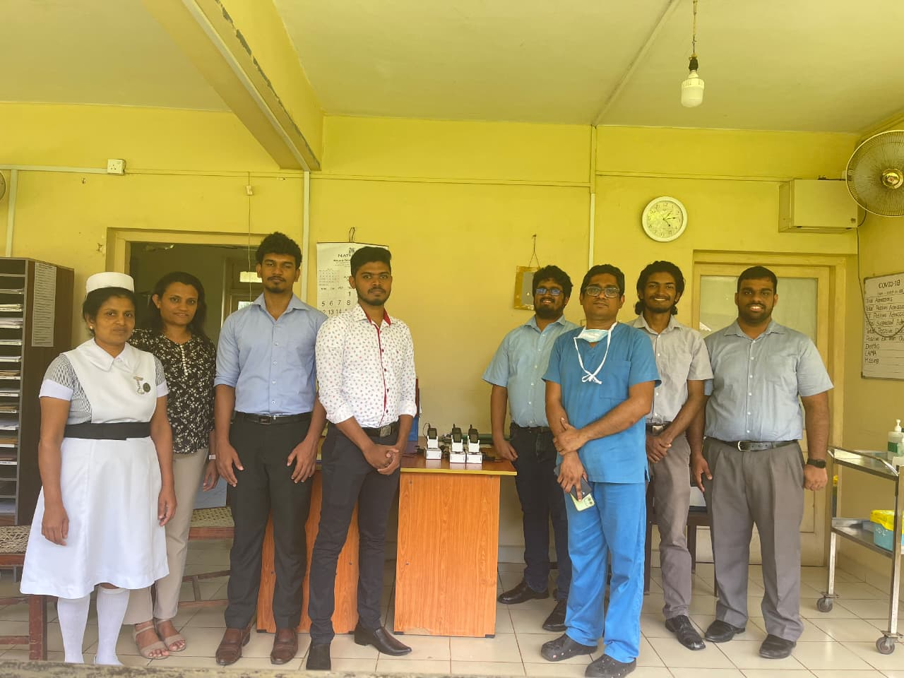
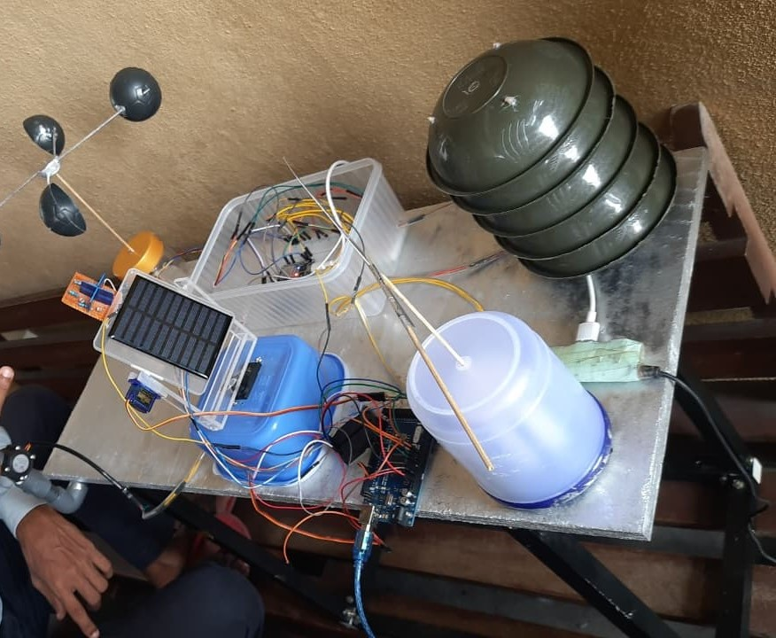
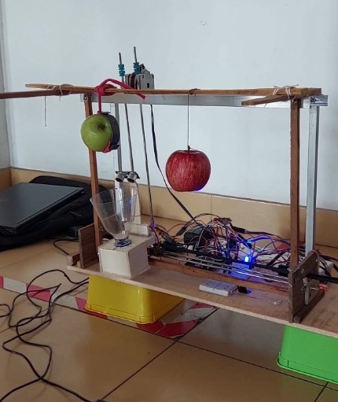

Other Academic Activities

Autonomous Miniature Taxi Robot
2025 · PID + ML
PID line/wall-following navigation and a custom-dataset ML model for sign detection.

Lab-on-a-Chip Dielectrophoresis
2024 · MEMS
Microfluidic platform for dielectrophoretic blood particle separation.

Nurse–Patient Communication (IDH)
2024 · Infectious Diseases Hospital
Assistive communication system to reduce in-person contact during isolation care.

IoT Weather Monitoring
2023 · Embedded Sensor Network
Solar-powered sensor network for localized weather parameter tracking.

XY Cartesian Demonstration Robot
2023 · Object Detection
Semester 2 project modeling fruit harvesting using a Cartesian gantry and computer vision.